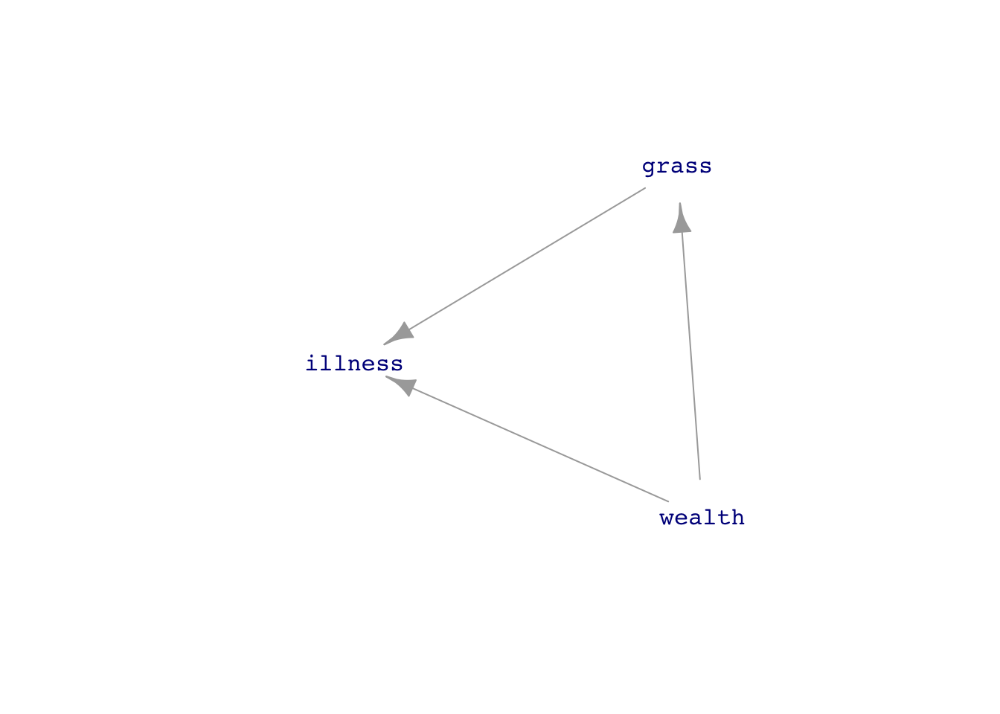

30 Confounding
Many people are concerned that the chemicals used by lawn-greening companies are a source of cancer or other illness. Imagine designing a study that could confirm or refute this concern. The study would sample households, some with a history of using lawn-greening chemicals and others that have never used them. The question for the study designers: What variables to record?
An obvious answer: record both chemical use and a measure of health outcome, say whether anyone in that household has developed cancer in the last five years. We will suppose that the two possible levels of grass treatment are “organic” or “chemicals.” As for illness, the levels will be “cancer” or “not.”
Here are two very simple DAGs describing possible theories:
\[\text{illness} \leftarrow \text{grass treatment}\ \ \ \ \text{ or }\ \ \ \ \ \text{illness} \rightarrow \text{grass treatment}\]
The DAG on the left expresses the belief among people who think chemical grass treatment might cause cancer. But belief is not necessarily reality, so we should consider the right-hand DAG. For example, one way to avoid the possibility of \(\text{illness} \rightarrow \text{grass treatment}\) is to include only households where cancer (if any) started after the grass treatment. Note that we are not ignoring the right-hand DAG; we are using the study design to disqualify it.
The statistical thinker knows that covariates are important. But which covariates? Answering that requires knowing a lot about the “domain,” that is, how things connect in the world. Such knowledge helps in thinking about the bigger picture and, in particular, possible covariates that connect plausibly to the response variable and the primary explanatory variable, grass treatment.
For now, suppose that the study designers have not yet become statistical thinkers and have rushed out to gather data on illness and grass treatment. Here are a few rows from the data (which we have simulated for this example):
| grass | illness |
|---|---|
| organic | not |
| chemicals | not |
| chemicals | not |
| chemicals | not |
| organic | not |
| organic | not |
| organic | not |
| organic | not |
| chemicals | cancer |
| organic | not |
Analyzing such data is straightforward. First, check the overall cancer rate:
# overall cancer rate
lm(zero_one(illness, one="cancer") ~ 1, data = Cancer_data) %>% coefficients()(Intercept)
0.026 In these data, 2.6% of the sampled households had cancer in the last five years. How does the grass treatment affect that rate?
mod <- lm(zero_one(illness, one="cancer") ~ grass, data = Cancer_data)
coefficients(mod) (Intercept) grassorganic
0.01246883 0.02258960 For households whose lawn treatment is “organic,” the risk of cancer is higher by 2.3 percentage points compared to households that treat their grass with chemicals. We were expecting the reverse, but it is what the data show. On the other hand, there is sampling variability to take into account. Look at the confidence intervals:
confint(mod) 2.5 % 97.5 %
(Intercept) -0.003103381 0.02804104
grassorganic 0.002469193 0.04271001The confidence interval on grassorganic does not include zero, but it comes close. So might the chemical treatment of grass be protective against cancer? Only at this point do the study designers do what they should have from the start: think about covariates.
One theory—just a theory—is this: Green grass is not a necessity, so the households who treat their lawn with chemicals tend to have money to spare. Wealthier people also tend to have better health, partly because of better access to health care. Another factor is that wealthier people can live in less polluted neighborhoods and are less likely to work in dangerous conditions, such as exposure to toxic chemicals. Such a link between wealth and illness points to a DAG hypothesis where “wealth” influences how the household’s grass is treated and wealth similarly influences the risk of developing cancer. Like this:

A description of this structure of causality is, “The effect of grass treatment on illness is confounded by wealth.” The Oxford Languages dictionary offers two definitions of “confound.”
- Cause surprise or confusion in someone, especially by acting against their expectations.
- Mix up something with something else so that the individual elements become difficult to distinguish.
This second definition carries the statistical meaning of “confound.”
The first definition seems relevant to our story since the protagonist expected that chemical use would be associated with higher cancer rates and was surprised to find otherwise. But, the statistical thinker does not throw up her hands when dealing with mixed-up causal factors. Instead, she uses modeling techniques to untangle the influences of various factors.
Using covariates in models is one such technique. Our wised-up study designers go back to collect a covariate representing household wealth. Here is a glimpse at the updated data.
| wealth | grass | illness |
|---|---|---|
| 1.4283990 | organic | not |
| 0.0628559 | chemicals | not |
| 0.4382804 | chemicals | not |
| 0.6084487 | chemicals | not |
| 0.8033695 | organic | not |
| -0.9367287 | organic | not |
| 0.6664468 | organic | not |
| -1.2445977 | organic | not |
| -1.3194594 | chemicals | cancer |
| -1.6162391 | organic | not |
Having measured wealth, we can use it as a covariate in the model of illness:
lm(zero_one(illness, one="cancer") ~ grass + wealth, data = Cancer_data) %>%
confint() 2.5 % 97.5 %
(Intercept) 0.02468113 0.0574819325
grassorganic -0.04508107 -0.0009698601
wealth -0.05680934 -0.0356454288With wealth as a covariate, the model shows that (all other things being equal) “organic” lawn treatment reduces cancer risk. However, we do not see this directly from the grass and illness variables because all other things are not equal: wealthier people are more likely to use chemical lawn treatment. (Keep in mind that this is simulated data. Do not conclude from this example anything about the safety of the chemicals used for lawn greening.)
As you know, people are encouraged to get vaccinated before flu season. This recommendation is particularly emphasized for older adults, say, 60 and over.
In 2012, the Lancet, a leading medical journal, published a systematic examination and comparison of many previous studies. The Lancet article describes a hypothesis that existing flu vaccines may not be as effective as was originally found.
A series of observational studies undertaken between 1980 and 2001 attempted to estimate the effect of seasonal influenza vaccine on rates of hospital admission and mortality in [adults 65 and older]. Reduction in all-cause mortality after vaccination in these studies ranged from 27% to 75%. In 2005, these results were questioned after reports that increasing vaccination in people aged 65 years or older did not result in a significant decline in mortality. Five different research groups in three countries have shown that these early observational studies had substantially overestimated the mortality benefits in this age group because of unrecognized confounding. This error has been attributed to a healthy vaccine recipient effect: reasonably healthy older adults are more likely to be vaccinated, and a small group of frail, undervaccinated elderly people contribute disproportionately to deaths, including during periods when influenza activity is low or absent.
Figure 30.1 presents a network of causal influences that could shape the “healthy vaccine recipient.” People are more likely to become frail as they get older. Frail people are less likely to get vaccinated, but more likely to die in the next few months. The result is that vaccination is associated with reduced mortality, even if there is no direct link between vaccination and mortality.
Block that path!
Let us look more generally at the possible causal connections among three variables, which we will call X, Y, and C. We will stipulate that X points causally toward Y and that C is a possible covariate. Like all DAGs, there cannot be a cycle of causation. These conditions leave three distinct DAGs that do not have a cycle, shown in Figure 30.2.


C plays a different role in each of the three dags. In sub-figure (a), C causes both X and Y. In (b), part of the way that X influences Y is through C. We say, in this case, “C is a mechanism by which X causes Y. In sub-figure (c), C does not cause either X or Y. Instead, C is a consequence of both X and Y.1
To understand how a DAG informs whether or not to include a covariate, It will help to give general names to some of the sub-structures seen in the Figure 30.2 DAGs. ?fig-dag-paths shows some of these sub-structures, removing other links that are not part of the structure.


A “direct causal link” between X and Y. There are no intermediate nodes.
A “causal path” from C to X and on to Y. A causal path is one where, starting at the originating node, flow along the arrows can get to the terminal node, passing through all intermediate nodes.
A “correlating path” from Y through X to C. Correlating paths are distinct from causal paths because, in a correlating path, there is no way to get from one end to the other by following the flows.
A “collider”
wealth. In other words, both X and Y are causes of C.
Look back to Figure 30.2(a), where wealth is a confounder. A confounder is always an intermediate node in a correlating path.
:::
Including a covariate either blocks or opens the pathway on which that covariate lies. Which it will be depends on the kind of pathway. A causal path, as in Figure 30.3(b), is blocked by including the covariate. Otherwise, it is open. A correlating path (?fig-dags-path(c)) is similar: the path is open unless the covariate is included in the model. A colliding path, as in Figure 30.3(d), is blocked unless the covariate is included—the opposite of a causal path.
Often, covariates are selected to block all paths except the direct link between the explanatory and response variable. This means do include the covariate if it is on a correlating path and do not include it if the covariate is at the collision point.
As for a causal path, the choice depends on what is to be studied. Consider the DAG drawn in Figure 30.2(b), reproduced here for convenience:

grass influences illness through two distinct paths:
- the direct link from
grasstoillness. - the causal pathway from
grassthroughwealthtoillness.
Admittedly, it is far-fetched that choosing to green the grass makes a household wealthier, but focus on the topology of the DAG and not the unlikeliness of this specific causal scenario.
There is no way to block a direct link from an explanatory variable to a response. If there were a reason to do this, the modeler probably selected the wrong explanatory variable.
But there is a genuine choice to be made about whether to block pathway (ii). If the interest is the purely biochemical link between grass-greening chemicals and illness, then block pathway (ii). However, if the interest is in the total effect of grass and illness, including both biochemistry and the sociological reasons why wealth influences illness, then leave the pathway open.
::: {.callout-warning} ## In draft: Some resources
https://towardsdatascience.com/causal-effects-via-dags-801df31da794
https://towardsdatascience.com/causal-effects-via-the-do-operator-5415aefc834a
In any given real-world context, good practice calls for considering each possible DAG structure and concocting a story behind it. Such stories will sometimes be implausible, but there can also be surprises that give the modeler new insight.↩︎